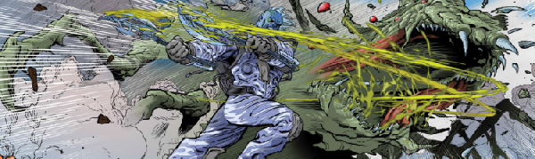

Genetically-engineered dog-soldiers battle a global insectoid menace in Earth's far future.
Art by Richard Elson
| Story Title | Parts | Pages | w indicates a wraparound coverCovers | Year(s) | Issues | Writer | Artist | Colourist | Letterer |
|---|---|---|---|---|---|---|---|---|---|
| Kingdom | 9 | 60 | 0 | 2006-2007 | Reprints: FCBD1 (partial: ep1, 6pp)p2007, 1518-1525 | Dan Abnett | Richard Elson | Steve Roberts | Ellie de Ville |
| The Promised Land | 11 | 70 | 1570: Richard Elson 1574: Richard Elson 2 | 2007-2008 | p2008, 1567-1576 | Dan Abnett | Richard Elson | <-- | Simon Bowland |
| Call of the Wild | 12 | 65 | 1652: Richard Elson 1 | 2009 | 1650-1661 | Dan Abnett | Richard Elson | Abigail Bulmer | Simon Bowland |
| His Master's Voice | 12 | 65 | 1717: Jon Davis‑Hunt 1722: Simon Davis 2 | 2010-2011 | p2011, 1715-1725 | Dan Abnett | Richard Elson | Abigail Bulmer | Simon Bowland |
| Aux Drift | 10 | 56 | 1902: Richard Elson 1907: Richard Elson 2 | 2014 | 1900-1909 | Dan Abnett | Richard Elson | Abigail Ryder | Simon Bowland |
| Beast of Eden | 12 | 66 | 1963: Ryan Brown 1 | 2015-2016 | 1961-1972 | Dan Abnett | Richard Elson | <-- | Simon Bowland |
| As It Is in Heaven | 12 | 66 | 2021: Patrick Goddard & Gary Caldwell (C) 1 | 2016-2017 | 2011-2022 | Dan Abnett | Richard Elson | <-- | Ellie de Ville |
| Alpha and Omega | 11 | 60 | 2105: Tiernen Trevallion 1 | 2018 | 2100-2110 | Dan Abnett | Richard Elson | Abigail Bulmer | Ellie de Ville |
Linked to ShakoShako's Kingdom | 1 | 10 | 0 | 2020 | SFS25 | Dan Abnett | Richard Elson | <-- | Simon Bowland |
| year | episodes | pages |
| 1977 | 0 | 0.0 |
| 1978 | 0 | 0.0 |
| 1979 | 0 | 0.0 |
| 1980 | 0 | 0.0 |
| 1981 | 0 | 0.0 |
| 1982 | 0 | 0.0 |
| 1983 | 0 | 0.0 |
| 1984 | 0 | 0.0 |
| 1985 | 0 | 0.0 |
| 1986 | 0 | 0.0 |
| 1987 | 0 | 0.0 |
| 1988 | 0 | 0.0 |
| 1989 | 0 | 0.0 |
| 1990 | 0 | 0.0 |
| 1991 | 0 | 0.0 |
| 1992 | 0 | 0.0 |
| 1993 | 0 | 0.0 |
| 1994 | 0 | 0.0 |
| 1995 | 0 | 0.0 |
| 1996 | 0 | 0.0 |
| 1997 | 0 | 0.0 |
| 1998 | 0 | 0.0 |
| 1999 | 0 | 0.0 |
| 2000 | 0 | 0.0 |
| 2001 | 0 | 0.0 |
| 2002 | 0 | 0.0 |
| 2003 | 0 | 0.0 |
| 2004 | 0 | 0.0 |
| 2005 | 0 | 0.0 |
| 2006 | 1 | 12.0 |
| 2007 | 9 | 58.0 |
| 2008 | 10 | 60.0 |
| 2009 | 12 | 65.0 |
| 2010 | 1 | 10.0 |
| 2011 | 11 | 55.0 |
| 2012 | 0 | 0.0 |
| 2013 | 0 | 0.0 |
| 2014 | 10 | 56.0 |
| 2015 | 1 | 10.0 |
| 2016 | 12 | 66.0 |
| 2017 | 11 | 56.0 |
| 2018 | 11 | 60.0 |
| 2019 | 0 | 0.0 |
| 2020 | 1 | 10.0 |
| 2021 | 0 | 0.0 |